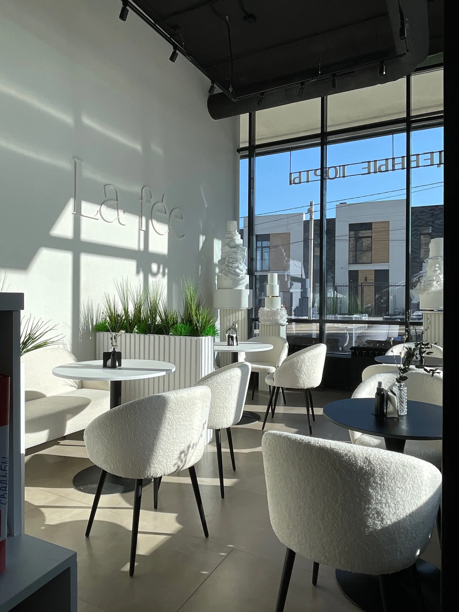
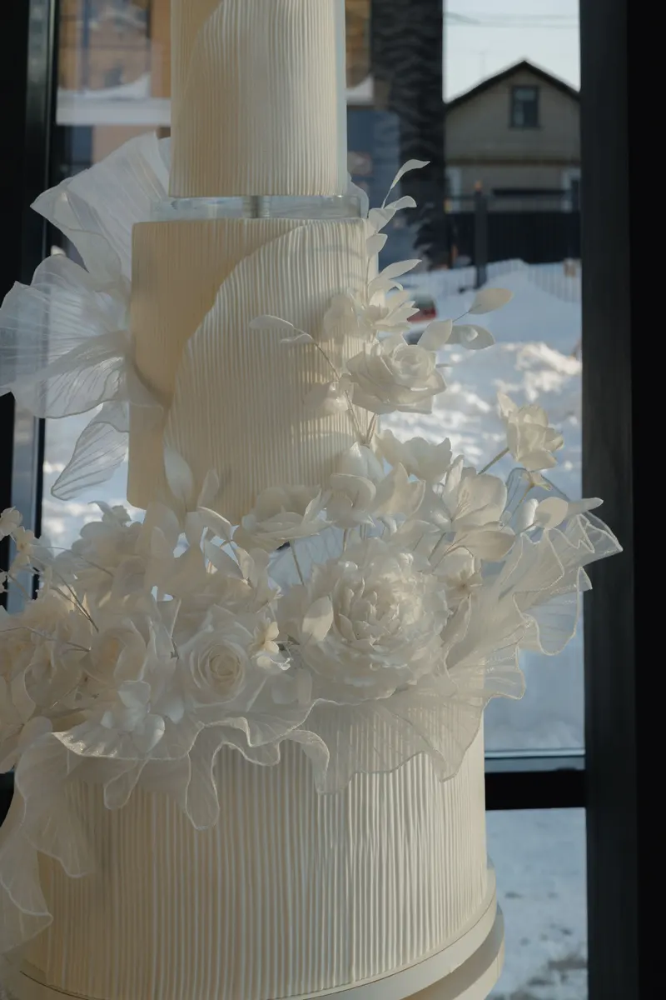
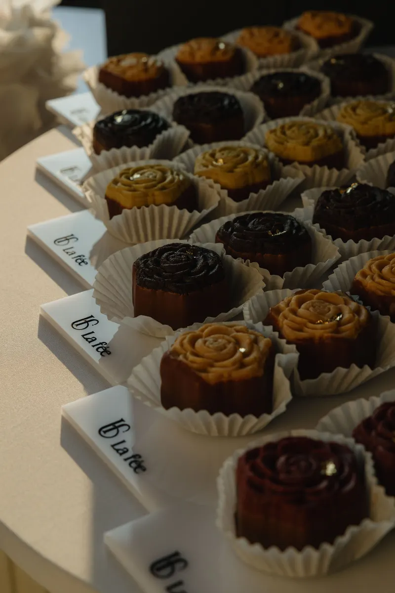
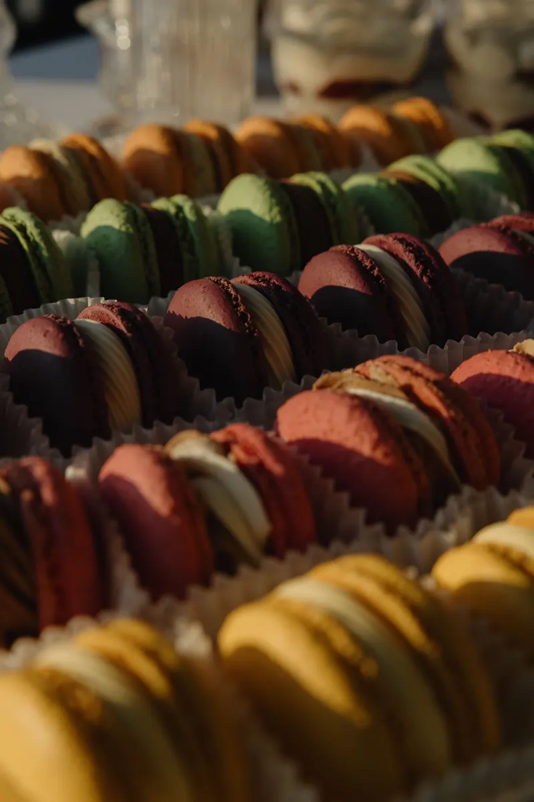

Кондитерская на Ломоносова, 58
Корпусные десерты и свадебные торты в Воронеже
Корпусные пирожные, эклеры, макаронс и торты на заказ, в том числе свадебные. Можно остаться в светлом зале с кофе или взять десерты с собой.

- 5,0 на Яндекс.Картах, 50 оценок
- Торты на заказ, в том числе свадебные
- Открыто ежедневно с 9:00 до 20:00
Что у нас можно заказать и купить
Цену торта называем при заказе: она зависит от размера, начинки и оформления.
Торты на заказ
- Свадебный тортуточнить
- Торт «Красный бархат»уточнить
- Торт «Малина-фисташка»уточнить
- Торт на любой праздникуточнить
Десерты
- Корпусные пирожныефисташка, лимон, мангоуточнить
- Эклерыуточнить
- Макаронсуточнить
- Картошкауточнить
- Кофе с собойуточнить
Как заказать торт
- 01
Повод и дата
Напишите в Telegram или позвоните: скажите, к какому дню нужен торт.
- 02
Начинка и оформление
Расскажите задумку и пришлите пример, подберём начинку и внешний вид.
- 03
Самовывоз
Заберите торт на улице Ломоносова, 58.



Что пишут клиенты
Корпусные пирожные
«Здесь делают трендовые корпусные пирожные!», пишет Дарья Киселёва.
Любой запрос
«Любой запрос, любой безумный заказ воплотят в жизнь в самом лучшем виде», пишет Оксана.
Свадебный торт
«Мы заказывали красный бархат, и это было лучшее решение!», пишет Наталья.
Светлый зал
«Светло, красиво, чисто. Огромные окна, белые стены, уютные детальки», пишет София Глазачева.
Отзывы с Яндекс.Карт
«Отличное место, чтобы замедлиться, выпить чашечку чая и насладиться безумно вкусными десертами. Здесь делают трендовые корпусные пирожные! Попробовала и была в полном восторге, мои фавориты фисташка и лимон. Однозначно советую это место!»
Дарья Киселёва · 1 апреля
«Я та ещё сладкоежка, а уж если ещё тортик выглядит как произведение искусства, то это вообще просто для меня отдельный повод для праздника!! С La fee я знаю что могу быть уверена что наш любой запрос, любой безумный заказ воплотят в жизнь в самом лучшем виде, что это будет не только красиво, но и очень вкусно 😻»
Оксана · 17 марта
«Кондитерская на высоком уровне! Внутри чисто, стильно, современно. Торты в трендовых прямоугольных кусочках. Уделяют внимание гигиене и упаковке, все очень эстетично. Очень понравился торт малина-фисташка, один из самых вкусных, что я пробовала. Слой суфле и влажный бисквит, вау!»
Оля М. · 19 февраля
Отзывы с карточки на Яндекс.Картах, без правок.
Контакты
- Адрес
- улица Ломоносова, 58, Воронеж
- Часы
- ежедневно, с 9:00 до 20:00
- Телефон
- +7 (980) 541-02-95